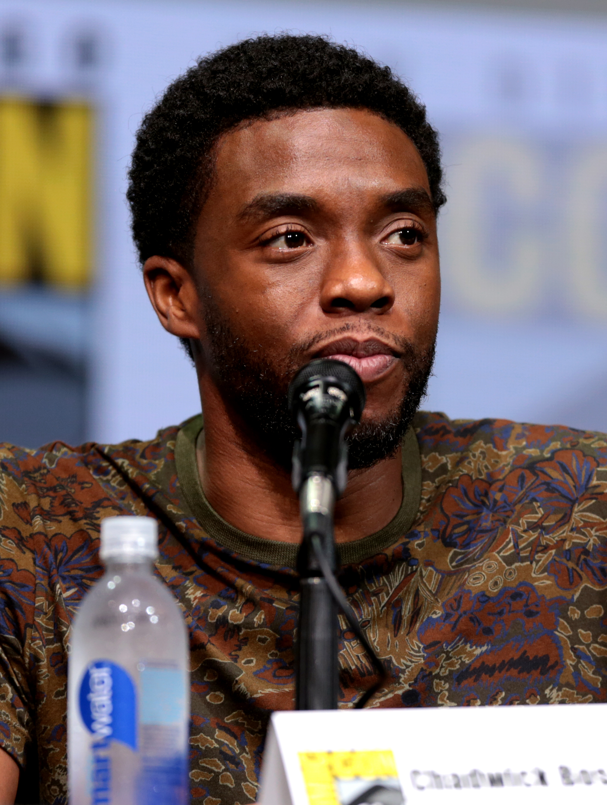

Sobre
Chadwick Aaron Boseman foi um ator, diretor e roteirista norte-americano.
Ele era mais conhecido por seus retratos de figuras históricas da vida real, como Jackie Robinson em 42 (2013), James Brown em Get on Up - A História de James Brown (2014) e Thurgood Marshall em Marshall (2017), e por seu retrato como T'Challa / Pantera Negra no Universo Cinematográfico Marvel, nos filmes Captain America: Civil War (2016), Black Panther (2018), Avengers: Infinity War (2018), Avengers: Endgame (2019) e fornecendo a sua voz na série animada What If...? (2021). Ele também estrelou filmes como 21 Bridges (2019), Da 5 Bloods (2020) e Ma Rainey's Black Bottom (2020), seu último filme.
Boseman morreu em 28 de agosto de 2020, aos 43 anos, após uma batalha de quatro anos contra o câncer colorretal.
Prêmios
- Globo de Ouro de Melhor Ator
Filme - Drama | 2021 - Prêmio Screen Actors Guild por Melhor
Desempenho de um Elenco em um Filme - Prêmio AACTA International
Melhor Ator - Prêmio Critics 'Choice
Movie de Melhor Ator - MTV Movie Award por
Melhor Herói